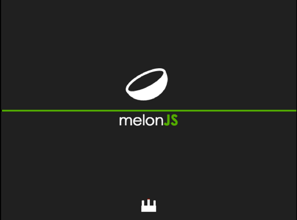
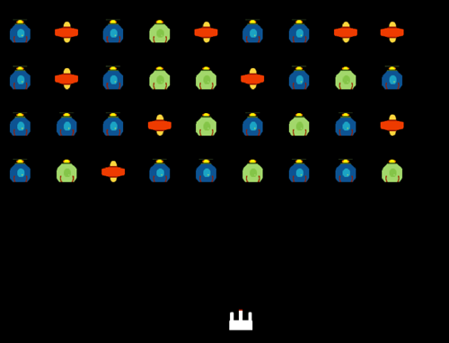

Space Invaders Tutorial
In this tutorial, we will create a space invaders clone. This tutorial will primarily be focused on creating more game elements through code, and using other APIs that MelonJS provides, that the platformer tutorial does not cover.
Introduction
To work through this tutorial, you need the following:
- The melonJS boilerplate, that we will use as default template project for our tutorial.
-
The tutorial image assets, to be uncompressed into the boilerplate data directory. So when you unzip, you should have:
data/img/player.png data/img/ships.png js/game.js etc
- The melonJS library. If you downloaded the boilerplate, you will already have this. It should be copied under the /lib directory. You can copy the development version, as the boilerplate provides a minification task.
- The melonJS documentation for more details
Testing/debugging :
Your best bet is to use a local web server, as for example detailed in the melonJS boilerplate README, by running `npm run serve` in the command prompt, that will allow you to test your game in your browser using the http://localhost:8000 url.
If you just want to use the filesystem, the problem is you'll run into "cross-origin request" security errors. With Chrome, you need to use the "--disable-web-security" parameter or better "--allow-file-access-from-files" when launching the browser. This must be done in order to test any local content, else the browser will complain when trying to load assets through XHR. Though this method is not recommended. As long as you have the option enabled, you're adding security vulnerabilities to your session.
Setting up our ships
Your directory structure from the boilerplate should look something like this:
data/
img/
player.png
ships.png
js/
game.js
resources.js
entities/
HUD.js
entities.js
screens/
play.js
title.js
index.html
index.css
The boilerplate provides a bunch of default code. For this tutorial there are some files that we will not need. You can delete the file screens/title.js, and remove the entire js/entities folder. Then update the index.html file to no longer include those, and remove the references of TitleScreen from the game.js file.
var game = {
// Run on page load.
onload : function () {
// Initialize the video.
if (!me.video.init(640, 480, {wrapper : "screen", scale : 'auto'})) {
alert("Your browser does not support HTML5 canvas.");
return;
}
// Initialize the audio.
me.audio.init("mp3,ogg");
// set and load all resources.
// (this will also automatically switch to the loading screen)
me.loader.preload(game.resources, this.loaded.bind(this));
},
// Run on game resources loaded.
loaded : function () {
// set the "Play/Ingame" Screen Object
this.playScreen = new game.PlayScreen();
me.state.set(me.state.PLAY, this.playScreen);
// start the game
me.state.change(me.state.PLAY);
}
};
Game.js is where the game is bootstrapped. index.html calls the game.onload function after loading all the js files in the window ready event. The me.video.init bit creates the canvas tag and gets the video setup.
Lines 12-16 are for using the debug panel.
Then we intialize the audio engine, telling it what formats we are supporting for this game.
We also tell, using me.loader, what assets needs to be loaded via an array, and set a callback to our loaded function.
The final step of this process is setting the state of the game to loading.
loaded : function () {
this.playScreen = new game.PlayScreen();
me.state.set(me.state.PLAY, this.playScreen);
// start the game
me.state.change(me.state.PLAY);
}
The loaded function then sets up the playscreen and tells the game to use that screen object for the play state.
Then the game state is set to PLAY.
Back to space invaders
The first thing to add is images to the resources.js file.
game.resources = [
{ name: "player", type: "image", src: "data/img/player.png" },
{ name: "ships", type: "image", src: "data/img/ships.png" }
];
This variable is the one passed to me.loader.preload in game.js
The structure for an asset is :
| name | The name of the asset you wish to use in your game. A string key. |
| type | The type of the asset. Valid types are: audio, binary, image, json, tmx, tsx. Binary is a good solution for loading raw text, or any other format not listed. TMX & TSX are for tiled file formats. Whether it be the xml or json format. |
| src | The path to the asset, relative from index.html. For audio you need specify the folder instead of direct path. |
Open js/screens/play.js and empty the code from the two methods: onResetEvent and onDestroyEvent. Then save, and then open the game in your web browser.
There is not much to see yet. Let's change that.
First thing is to create a player entity.
Add a new file under the js folder, and call it player.js. Be sure to add it in the index.html file.
game.Player = me.Sprite.extend({
init : function () {
var image = me.loader.getImage("player");
this._super(me.Sprite, "init", [
me.game.viewport.width / 2 - image.width / 2,
me.game.viewport.height - image.height - 20,
{ image : image }
]);
}
});
So what we're doing is adding a function to the window.game object that extends me.Sprite. It sets up an init method that grabs the player image.
For the x coordinate, we simply grab the dead center, and subtract half the ship, so it can be positioned in the center. And then set its y property to be 20 pixels above the bottom. Then finally pass the image instance to it.
Calling this._super is how we reference a parent classes' method. In this case, we're calling the me.Sprite contrusctor.
Let's setup the player in the entity pool. Open game.js and add the following at the top of the loaded method:
me.pool.register("player", game.Player);Now open up js/screens/play.js, and edit the onResetEvent method so it looks like this:
game.PlayScreen = me.ScreenObject.extend({
/**
* action to perform on state change
*/
onResetEvent : function () {
me.game.world.addChild(me.pool.pull("player"));
},
/**
* action to perform when leaving this screen (state change)
*/
onDestroyEvent : function () {
}
});
The onResetEvent is called when this state is loaded. So when invoking
me.state.change(me.state.PLAY);In the game.js file, onResetEvent is then called.
Yay, the ship is on the bottom of the screen!
But we can still see the loading bar, that's not cool. The reason for this is that MelonJS does not want to do any operations that it doesn't have to. Sometimes you'll have a background image that gets redrawn, so it covers the original loading bar. However, we don't have a background image for this game, so what we will do is add a color layer.
me.game.world.addChild(new me.ColorLayer("background", "#000000"), 0);Add that in the play screen, above the line where we added the player. The first parameter is simply the name for the layer, so it's easy to fetch from the game world later if you need to.
The second parameter is the color to draw in hex.
The second parameter passed to the addChild function is the z index. We want it to draw first, so we set it at zero.
Now the pesky loading bar should be gone. Time to add in an enemy. Create a new file under the js folder called enemy.js, and add it to the index.html file.
Since enemies will have to collide with things like the player's laser, it should extend me.Entity as opposed to me.Sprite, so lets get that going:
game.Enemy = me.Entity.extend({
init: function (x, y) {
this._super(me.Entity, "init", [x, y, {
image : "ships",
width : 32,
height : 32
}]);
},
update: function (dt) {
this._super(me.Entity, "update", [dt]);
return true;
}
});
With the enemy, we will need to place them in different spots, so x & y will be added to its constructor, and then passed along to the me.Entity's constructor. The third parameter in the array is a hash of settings. The settings specifies the image as "ships", referencing our game.resources array. The width and height are set to 32x32.
We're creating a custom update method, to tell the game engine to redraw. When melon goes through the game loop, it does an or on the result. If there are no changes in a given frame, it won't repaint. Returning true, and calling the super method will ensure the enemies do indeed render.
In game.js, add the enemy to the entity pool:
me.pool.register("enemy", game.Enemy);Back in play.js, add an enemy to the game world. Your play.js should now look like:
game.PlayScreen = me.ScreenObject.extend({
/**
* action to perform on state change
*/
onResetEvent : function () {
me.game.world.addChild(new me.ColorLayer("background", "#000000"), 0);
me.game.world.addChild(me.pool.pull("player"), 1);
me.game.world.addChild(me.pool.pull("enemy", 50, 50), 2);
},
/**
* action to perform when leaving this screen (state change)
*/
onDestroyEvent : function () {
}
});
You can put the enemy at any x & y to try it out. Save & refresh the page in your browser.
You'll likely notice that the ship is constantly changing how it looks. If you open the ships.png file under data/img, you can see that it is a sprite sheet containing 4 different ships. me.Entity for its renderable uses the me.AnimationSheet class. Since we didn't add and set any animations on the renderable property, it is just looping through each & every frame. Let's fix that.
Add a new method to our enemy:
chooseShipImage: function () {
var frame = ~~(Math.random() * 3);
this.renderable.addAnimation("idle", [frame], 1);
this.renderable.setCurrentAnimation("idle");
}
The first line simply randomizes which frame we want. The ship is 32x32, the image is 64x64, so we have 4 frames. ~~ is a shortcut for Math.floor when the number is 0 or positive. On negative numbers, it works like Math.ceil.
The second line is accessing the animation sheet instance (this.renderable), and uses the addAnimation function to add a new idle frame. So we simply specify the index that was generated at random.
With the final line, we set the current animation to idle.
Now call the function at the bottom of the constructor, like so:
game.Enemy = me.Entity.extend({
init: function (x, y) {
this._super(me.Entity, "init", [x, y, {
image: "ships",
width: 32,
height: 32
}]);
this.chooseShipImage();
},
chooseShipImage: function () {
var frame = ~~(Math.random() * 3);
this.renderable.addAnimation("idle", [frame], 1);
this.renderable.setCurrentAnimation("idle");
},
});
Now refresh the page, and our ship should only pop up as one of them. Try refreshing it multiple times to see it change.
Applying Movement
Now that we have ships on screen, let's actually get some interaction going.
Back in play.js, lets add some keybindings:
game.PlayScreen = me.ScreenObject.extend({
/**
* action to perform on state change
*/
onResetEvent : function () {
me.game.world.addChild(new me.ColorLayer("background", "#000000"), 0);
me.game.world.addChild(me.pool.pull("player"), 1);
me.game.world.addChild(me.pool.pull("enemy", 50, 50), 2);
me.input.bindKey(me.input.KEY.LEFT, "left");
me.input.bindKey(me.input.KEY.RIGHT, "right");
me.input.bindKey(me.input.KEY.A, "left");
me.input.bindKey(me.input.KEY.D, "right");
},
/**
* action to perform when leaving this screen (state change)
*/
onDestroyEvent : function () {
me.input.unbindKey(me.input.KEY.LEFT);
me.input.unbindKey(me.input.KEY.RIGHT);
me.input.unbindKey(me.input.KEY.A);
me.input.unbindKey(me.input.KEY.D);
}
});
The method calls here are pretty straight forward. We bind a keypress to an action name. Multiple keys can be assigned to a single action name.
It's typically a good game design practice to offer multiple key bindings. Even a better practice make it configurable. You always need to keep in mind people who are left handed or who have different layouts.
You might also noticed i added the z index option to the addChild calls. It's a pretty good practice, because that way you ensure your draw order.
The onDestroyEvent removes the events when changing state. Not something we actually need, because we only have the play state after loading. But a good practice to keep in mind.
Now that we have bindings, let's implement player movement. Add the following update function to the player class:
Then add a velx property to the player in its init method, as well as the furthest x position it can go on screen (maxX):
init : function () {
var image = me.loader.getImage("player");
this._super(me.Sprite, "init", [
me.game.viewport.width / 2 - image.width / 2,
me.game.viewport.height - image.height - 20,
{ image: image }
]);
this.velx = 450;
this.maxX = me.game.viewport.width - this.width;
},
Then modify the update method to check for the key events, and move the player accordingly.
update : function (time) {
this._super(me.Sprite, "update", [time]);
if (me.input.isKeyPressed("left")) {
this.pos.x -= this.velx * time / 1000;
}
if (me.input.isKeyPressed("right")) {
this.pos.x += this.velx * time / 1000;
}
this.pos.x = me.Math.clamp(this.pos.x, 0, this.maxX);
return true;
}
Update functions of our game objects will always receive a delta time (in milliseconds). It's important to pass it along to our parent's class update.
this._super(me.Sprite, "update", [time]);After that, it's a matter of checking if the left action is currently pressed. Using the velocity value set earlier, we simply subtract the velocity value, multiplied by the delta in seconds.
if (me.input.isKeyPressed("left")) {
this.pos.x -= this.velx * time / 1000;
}
To move right, we check for the right action, and add the velocity value to our x position.
if (me.input.isKeyPressed("right")) {
this.pos.x += this.velx * time / 1000;
}
We then use clamp to ensure the x value does not go outside the screen.
this.pos.x = me.Math.clamp(this.pos.x, 0, this.maxX);The return value tells melon whether a re-draw is required. This can be useful to dictate for when an animation sheet needs to animate on a given frame. However, this is a single sprite, so we can just tell it to redraw.
return true;Save the file & refresh your browser. Try using A/D or the Left & Right arrow keys to move.
Enemy movement
A defining characteristic of space invaders is that all the ships move in one direction, shift down and then go in the other direction. They all move together. We could take the velocity logic that we used for the player, and apply it to the enemy class. But we can better leverage MelonJS to do this for us. Time to use our own subclass of me.Container
Objects inside a container are relative to its parent. So when we move the container, all objects inside shift with it. This applies to rotation & scale operations as well. So let's create one.
Create a new file: js/enemy_manager.js, and add it to the index.html.
game.EnemyManager = me.Container.extend({
init : function () {
this._super(me.Container, "init", [0, 32,
this.COLS * 64 - 32,
this.ROWS * 64 - 32
]);
this.COLS = 9;
this.ROWS = 4;
this.vel = 16;
this.onChildChange = function () {
this.updateChildBounds();
};
}
});
Essentially what we're setting up here is the start position and the base width. Starting the container 32 pixels down, and at 0 left (or x).
Notice as well the "onChildChange" callback function that we use to automatically call ""updateChildBounds"" to ensure that our object container is resized properly to take in account all added and removing childs.
We're allotting 64 pixels per ship width & height wise. Then subtracting 32 pixels because the last row & column does not require the side padding.
For adding enemies to our container, we need another method:
createEnemies : function () {
for (var i = 0; i < this.COLS; i++) {
for (var j = 0; j < this.ROWS; j++) {
this.addChild(me.pool.pull("enemy", i * 64, j * 64));
}
}
}
Generating 9 columns, and 4 rows: 36 ships.
Now in play.js, remove the addChild for the enemy, and set a property to an enemy manager. Below that invoke createEnemies, and add it to the game world.
onResetEvent : function () {
me.game.world.addChild(new me.ColorLayer("background", "#000000"), 0);
me.game.world.addChild(me.pool.pull("player"), 1);
this.enemyManager = new game.EnemyManager();
this.enemyManager.createEnemies();
me.game.world.addChild(this.enemyManager, 2);
me.input.bindKey(me.input.KEY.LEFT, "left");
me.input.bindKey(me.input.KEY.RIGHT, "right");
me.input.bindKey(me.input.KEY.A, "left");
me.input.bindKey(me.input.KEY.D, "right");
me.input.bindKey(me.input.KEY.SPACE, "shoot", true);
}
Once you save and refresh, you should see a bunch of random ships.
For movement, let's keep it simple and have the container move once per second. For this, we can use a melonjs timer.
Add these two methods to the enemy_manager.js
onActivateEvent : function () {
var _this = this;
this.timer = me.timer.setInterval(function () {
_this.pos.x += _this.vel;
}, 1000);
},
onDeactivateEvent : function () {
me.timer.clearInterval(this.timer);
}
And then set the vel property in the init method to 16:
this.vel = 16;onActivateEvent is called (if it's defined) when the object is added to the game world. This goes for any object you pass to addChild on a container. Likewise, onDeactivateEvent is called when the object is removed from the game world.
Using the MelonJS version of setInterval (which is built into the game loop, it does not use window.setInterval), we can then increment the x position.
Save and refresh the browser. The enemy ships now all move together
Then add the removeChildNow counterpart:
onActivateEvent : function () {
var _this = this;
this.timer = me.timer.setInterval(function () {
var bounds = _this.childBounds;
if ((_this.vel > 0 && (bounds.right + _this.vel) >= me.game.viewport.width) ||
(_this.vel < 0 && (bounds.left + _this.vel) <= 0)) {
_this.vel *= -1;
_this.pos.y += 16;
if (_this.vel > 0) {
_this.vel += 5;
}
else {
_this.vel -= 5;
}
}
else {
_this.pos.x += _this.vel;
}
}, 1000);
}
That's a fair bit of code, so let's break it down.
Using the child bounds, we can retrieve the left & right values to world coordinates.
var bounds = _this.childBounds;The first part of the if checks if the container is moving right, and the right edge + velocity is outside the viewport.
(_this.vel > 0 && (bounds.right + _this.vel) >= me.game.viewport.width)The second part checks if the container is moving left, and its left bounds is less than zero.
(_this.vel < 0 && (bounds.left + _this.vel) <= 0)In the block, we reverse the velocity, move down by 16 pixels and then increase the velocity.
_this.vel *= -1;
_this.pos.y += 16;
if (_this.vel > 0) {
_this.vel += 5;
}
else {
_this.vel -= 5;
}
Then the last bit, we increment the velocity if the container hasn't moved left or right
else {
_this.pos.x += _this.vel;
}
Save and refresh this time, it should now move back and forth across the screen, closer to our player. But there's a problem! It isn't turning around when it gets to the edge! What's going on here?
At this point, you should add #debug to the URL: http://localhost:8000/#debug and tap on the checkbox next to "hitbox" in the debug panel. This will enable hitbox rendering, so you can visualize the internal structure of your objects.
The hitboxes show that the child bounds (the large purple rectangle occupying the EnemyManager's original position) is not moving with the container. This is because child bounds updates are not automatically computed. You can easily recompute the child bounds by overloading the update method:
update : function (time) {
this._super(me.Container, "update", [time]);
this.updateChildBounds();
}
Save and refresh, and you'll find that it now works as expected!
Adding Lasers, pew pew!
Time to get some actual “game” in this game.
First thing to do is open up your play.js file, and add a new keybind & unbind:
me.input.bindKey(me.input.KEY.SPACE, "shoot", true);me.input.unbindKey(me.input.KEY.SPACE);The reason for the boolean in the bindKey call is to only allow on register per key press. So in order to shoot twice, the player must press the space bar, release it, and then press it again.
Before we wire up the player to shoot, we need a laser. Create a laser.js file, and add the following code to it. As always, be sure to add the laser.js script tag in the index.html file.
game.Laser = me.Entity.extend({
init : function (x, y) {
this._super(me.Entity, "init", [x, y, { width: game.Laser.width, height: game.Laser.height }]);
this.z = 5;
this.body.setVelocity(0, 300);
this.body.collisionType = me.collision.types.PROJECTILE_OBJECT;
this.renderable = new (me.Renderable.extend({
init : function () {
this._super(me.Renderable, "init", [0, 0, game.Laser.width, game.Laser.height]);
},
destroy : function () {},
draw : function (renderer) {
var color = renderer.getColor();
renderer.setColor('#5EFF7E');
renderer.fillRect(0, 0, this.width, this.height);
renderer.setColor(color);
}
}));
this.alwaysUpdate = true;
},
update : function (time) {
this.body.vel.y -= this.body.accel.y * time / 1000;
if (this.pos.y + this.height <= 0) {
me.game.world.removeChild(this);
}
this.body.update();
me.collision.check(this);
return true;
}
});
game.Laser.width = 5;
game.Laser.height = 28;
So lets go through it. At the bottom, we have set two properties of width & height for the laser, so it can easily be re-used.
game.Laser.width = 5;
game.Laser.height = 28;
Traditional stuff here. Setup the x & y position from its parameters, and a width+height properties. A bit different from our other objects, we have set the z index on the object manually. This is an alternative to passing the z index in the addChild call.
this._super(me.Entity, "init", [x, y, { width: game.Laser.width, height: game.Laser.height }]);
this.z = 5;
These next methods for setting up a physics body. Which we will use to move the laser across the screen.
this.body.setVelocity(0, 300);
this.body.collisionType = me.collision.types.PROJECTILE_OBJECT;
By default, me.Body will not setup shapes for you. me.Entity however creates a shape based on the position, width, and height.
First we set a velocity. Velocity is a vector, and we want the laser to move up. So set a velocity of 300. Note that velocity should never be negative to dictate direction.
this.body.setVelocity(0, 300);Then we set a collision type. This is useful in collision callbacks.
this.body.collisionType = me.collision.types.PROJECTILE_OBJECT;This is a fairly meaty bit of the code. me.Renderable is the base drawing class in melon. It gives the minimum setup required to be a valid drawing object in the game world.
this.renderable = new (me.Renderable.extend({
init : function () {
this._super(me.Renderable, "init", [0, 0, game.Laser.width, game.Laser.height]);
},
destroy : function () {},
draw : function (renderer) {
var color = renderer.getColor();
renderer.setColor('#5EFF7E');
renderer.fillRect(0, 0, this.width, this.height);
renderer.setColor(color);
}
}));
The init is pretty traditional, we set the x & y to zero, as this is going to be relative to the laser entity. Use the same width & height as the entity itself.
init: function () {
this._super(me.Renderable, "init", [0, 0, game.Laser.width, game.Laser.height]);
},
The empty destroy method is a callback for when the renderable is removed. We don't need to define callback logic, but the function still needs to be defined.
destroy : function () {},Then we implement the draw method. The classes we've used so far have provided a working draw method for our purposes, now we're going to use the renderer to draw something by hand.
draw : function (renderer) {
var color = renderer.getColor();
renderer.setColor('#5EFF7E');
renderer.fillRect(0, 0, this.width, this.height);
renderer.setColor(color);
}
The renderer can be either me.CanvasRenderer or me.WebGLRenderer, depending on your settings in me.video.init. The renderer provides basic drawing operations.
So we first get a reference of the original color. the return value of getColor() is an instance of me.Color.
var color = renderer.getColor();Set the color to a nice laser green.
renderer.setColor('#5EFF7E');Then use a fill rect number. Again, 0, 0 is relative. Then use the width & height to dictate the size of the rect we're filling
renderer.fillRect(0, 0, this.width, this.height);Then set the color back. This is important so our other draw calls will not be effected by the colour change.
renderer.setColor(color);Generally speaking you should create your game using images over using pure canvas draw calls, but knowing how and when to use the canvas can be rather useful.
The final step for our Laser's init method:
init : function (x, y) {
// ...
this.alwaysUpdate = true;
}
The alwaysUpdate property is to be avoided as much as possible. It will update an object when it is outside the viewport. The reason to use it in this game is because we don't want to remove the laser until it is offscreen. If we wait until it's offscreen, and alwaysUpdate is false, it will never get removed.
Speaking of the update method.
update : function (time) {
this.body.vel.y -= this.body.accel.y * time / 1000;
if (this.pos.y + this.height <= 0) {
me.game.world.removeChild(this);
}
this.body.update();
me.collision.check(this);
return true;
}
The first bit is how we will move the laser. The ship was just moved by manipulating the position directly. Since this has a collision body, we will manipulate the y velocity, by subtracting the y acceleration.
this.body.vel.y -= this.body.accel.y * time / 1000;If the position of the laser plus the height (so the bottom of the laser) is less than zero, we can remove the laser from the game world. Again, this will function now work because alwaysUpdate is set to true.
if (this.pos.y + this.height <= 0) {
me.game.world.removeChild(this);
}
The body update is very important, this applies the velocity we set for this frame.
this.body.update();Then we tell MelonJS to check collisions against this object with me.collision.check(this).
me.collision.check(this);The next step for this feature, is to add the laser to the entity pool. Add the following code to game.js, same as the Player & Enemy objects.
me.pool.register("laser", game.Laser);Then back in the player.js file, add the laser shooting in the update method:
if (me.input.isKeyPressed("shoot")) {
me.game.world.addChild(me.pool.pull("laser", this.pos.x - game.Laser.width, this.pos.y - game.Laser.height))
}
Reload the game, and try shooting. You should see the lasers fire. However they don't collide with anything.

Collisions
First lets give our Enemy a physics body. Append this to the init method in enemy.js
this.body.setVelocity(0, 0);
this.body.collisionType = me.collision.types.ENEMY_OBJECT;
Then add an update method so we can update the body:
update : function (time) {
this._super(me.Entity, "update", [time]);
this.body.update();
return true;
}
Now lets add a collision handler to the laser.js file.
onCollision : function (res, other) {
if (other.body.collisionType === me.collision.types.ENEMY_OBJECT) {
me.game.world.removeChild(this);
game.playScreen.enemyManager.removeChild(other);
return false;
}
}
The res parameter that we are not using, is simply the collision result. So it contains details on how much overlap there was, where the collision was, etc.
Since we set the collision type on the Enemy's body to be an ENEMY_OBJECT, we can check for that type on the object the laser collided with.
if (other.body.collisionType === me.collision.types.ENEMY_OBJECT) {Then we remove the enemy from the laser, along with the enemy from the enemyManager container.
me.game.world.removeChild(this);
game.playScreen.enemyManager.removeChild(other);
The return false in this case isn't strictly necessary, but it's important to point out. When you return false from a collision handler in MelonJS, the object will pass through. If you return true, it will do a hard stop.
Save the changes, and reload your browser. You should now be able to take out the enemy ships.
Next step, is adding the win & loss conditions.
Win & Loss Conditions
The final step to this game is to actually add conditions for winning & losing. The conditions themselves will be pretty straight forward. When the ships get within range of the player, the player loses. When the player destroys all the enemy ships, they win.
So what happens when the game ends? A lot of the time you want to display a screen of some sort that the player lost or won. To keep this simple and show you another little trick, we'll just reset the game. So it starts over.
First, we'll do the loss condition
The pseudo code for this will be:
if enemy manager overlaps player then end game else continue end
The PlayScreen is our current game state. It holds the reference to the player, and it has the ability to reset the state. So let's add the logic for checking a lose condition there.
checkIfLoss : function (y) {
if (y >= this.player.pos.y) {
this.reset();
}
},
Add that above the onResetEvent method. It accepts a Y value, and checks if it has surpassed the player. Then calls its reset method. The reset will wipe out every object from the game world, and reload the state. So it re-invokes onResetEvent, re-populating the enemies and player.
Now to call this condition check, simply add the method call to our interval in the enemy manager:
this.timer = me.timer.setInterval(function () {
var bounds = _this.childBounds;
if ((_this.vel > 0 && (bounds.right + _this.vel) >= me.game.viewport.width) ||
(_this.vel < 0 && (bounds.left + _this.vel) <= 0)) {
_this.vel *= -1;
_this.pos.y += 16;
if (_this.vel > 0) {
_this.vel += 5;
}
else {
_this.vel -= 5;
}
game.playScreen.checkIfLoss(bounds.bottom); // <<<
}
else {
_this.pos.x += _this.vel;
}
}, 1000);
Since we're checking in the checkIfLoss method if the passed number is greater than the Y position of the player, we need to pass the bottom edge of the container, which is just bounds.bottom.
The problem now though, is if you run it, this.player will be undefined. That's because we haven't yet setup this property on the playScreen. You can setup the property by doing the following:
Replace the line in onResetEvent:
me.game.world.addChild(me.pool.pull("player"), 1);With:
this.player = me.pool.pull("player");
me.game.world.addChild(this.player, 1);Save and refresh the browser. this.player will now be set properly, so calling our new method will now work. Let the enemies move around for a minute, and watch the game reset.
The Win Condition
Likewise, we'll just have the game reset once the player wins. Since we want to cause the win once all the ships are gone, we can check the length of the children on enemy manager.
First add this boolean to the bottom of the createEnemies method:
this.createdEnemies = true;Add the following change to the onChildChange callback previously defined in the enemy manager:
this.onChildChange = function () {
this.updateChildBounds();
if (this.children.length === 0) {
game.playScreen.reset();
}
};
This is pretty simple. Children is an array, so we check its length to be zero, and then reset the game if the condition is met
Save and refresh the browser. Try to take out all the ships in time, and see the game reset.
Challenges
We left some parts out of this tutorial, so you could explore them yourself. This is an important part of programming and game development.
If you get stuck on any of the challenges or parts of the tutorial, please search for the problem, or ask us the question on our forum @html5gamedevs
Challenge #1
Add a proper win & loss screen
- These screens can be made by adding additional ScreenObjects to the game, register them in game.js, and then changing state. For what states to use for the win & screen, look at the states available: http://melonjs.github.io/melonJS/docs/me.state.html
- The win and loss screen can contain a sprite, or text, or both. Whatever you wish really. Be sure to look at me.Font and me.Sprite. To display a me.Font object, use an instance of me.Renderable that contains an instance of me.Font, and implement the draw function to invoke me.Font#draw.
- Adjust the checkIfLoss method to show your new loss screen instead.
- Adjust the if block in the update method on EnemyManager, to change state to your win screneobject.
- Even more bonus, add a menu screen that tells the player how to play.
Challenge #2
Add a UI
- Add an enemy counter, and enemy velocity to the top right/left corner of the screen. These properties can be retrieved via: game.playScreen.enemyManager.children.length game.playScreen.enemyManager.vel
- Again look at me.Font, and implement a renderable for drawing text. Try to only use one class that extends renderable that can be used for both UI pieces.
- Add a score element. Keep track of the score on the play screen. Update it each time an enemy is killed. Remember that enemies are removed from the collision handler on the laser.
Challenge #3
Add the concept of levels
- After you defeat a wave, instead of refreshing the same wave, do a new wave the starts faster. The main logic here will be keeping wave count on the game.js, and increase it after each win. Then use that count in the enemy manager to configure the velocity.
- Have each wave progress faster too (+ 8 each Y increment over + 5 for example). Play with the numbers a bit until it feels right.